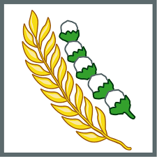

Ketuhanan yang maha esa
kemanusiaan yang adil dan beradab

Persatuan Indonesia
Kerakyatan yang dipimpin oleh hikmat kebijaksanaan
dalam permusyawarahan
perwakilan

|
Ketuhanan yang maha esa |
|
|---|---|---|
kemanusiaan yang adil dan beradab |
|
|
Persatuan Indonesia |
||
Kerakyatan yang dipimpin oleh hikmat kebijaksanaan
|
|
|
|  |
keadilan sosial bagi seluruh rakyat Indonesia |
|
Ketuhanan yang maha esa |
|---|---|
|
kemanusiaan yang adil dan beradab |
| Persatuan Indonesia | |
|
Kerakyatan yang dipimpin oleh hikmat kebijaksanaan dalam permusyawarahan perwakilan |
| keadilan sosial bagi seluruh rakyat Indonesia |